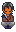
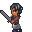
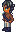
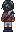

| Heart Level | Location | Other Requirements | Description |
|---|---|---|---|
| 0 Heart | WizardHouse | 4 or 5 days after drinking the junimo juice. | Welcome, the war-torn Bloodhound. He'll start his daily schedule after a day of seeing the junimo juice event. |
| 1 Heart | WizardHouse | None | Experience Ngao's plight. |
| 2 Heart | Town | None | Brain-numbing activity to keep Ngao out of the Wizard/Witch's hair. |
| 3 Heart | Adventurer's Guild | None | Marlon and Gil being old babysitters. |
| 4 Heart | Farm | 4 or 5 days after seeing previous. | Do YOU have magic? |
| 5 Heart | Forest | None | Part 1: Ruh roh raggy. |
| 5 Heart | WizardHouse | 4 or 5 days after seeing previous. | Part 2: RUH ROH RAGGY-- |
| 5 Heart | Farm | Raining | Part 3: Oh we're in it now huh, hope you don't get triggered by PTSD. |
| 6 Heart | WizardHouse | If you didn't pick the very obviously incorrect answer from previous. | Part 1: Masking! Masking the pain! Mask away the pain! |
| 6 Heart | Portals | Touch the portal. Do it. | Part 2: Hello?? Where are we?? |
| 7 Heart | Ngao's Room | A day or two after seeing him as a trinket. | Part 1: You got some splainin' to do, mister. |
| 7 Heart | Beach | Raining | Part 2: We're back at it again with the PTSD- |
| 8 Heart | Forest | Leo must have moved in. | ClaireStoryOfSeasons' favorite CHIMKEN event. No other notes. |
| 9 Heart | Farm | Fall 18 | Self explanatory if you look at his profile. |
| 10 Heart | Beach | Must be dating. 9:00 PM | Part 1: Oh? Where are we going? YIPEE?? |
| 10 Heart | Farm | Must be dating. 1 or 2 days BEFORE the wedding date of your choice. | Part 2: Authors Note: I fucking hated scripting this event so I shoved all the vanilla NPCs in. |
| 11 Heart | WizardHouse | Married | Part 1: Where are we go-ruh roh |
| 11 Heart | Ngao's Room | 5 or 6 days after seeing previous. | Part 2: You alright there, champ? No? Well I guess we're going into the portal. |
| 11 Heart | Ngao's Room | Must have completed up until the quest: 'Fight' | Part 3: Hope you got your boxing gloves on this boi's a trooper. |
| 11 Heart | [REDACTED] Area | Triggers upon looting the item from [REDACTED] | Part 4: Oh boy oh boy oh boy oh boy-- |
| 11 Heart | Farmhouse | 4 or 5 days after seeing previous. | Part 5: Oh shit is that a Final Fantasy XIV Critically Acclaimed MMO referen-- |
| 12 Heart | Ngao's Room | 4 or 5 days after seeing previous. | Part 1: It's time to rummage through Ngao's books in that study. |
| 12 Heart | Ngao's Room | Must have completed up to the quest: 'Soulbound Bloodhound' | Part 2: OH SHIT TITLE DROP |
| 13 Heart | Farmhouse | 4 or 5 days after seeing previous. | Authors Note: hi this is my 4th wall break saying hi to the player, you! |
| 14 Heart | Farm | None | Are we FINALLY done with all of this--oh shit a cliffhanger for my expansion. |
| Day | Location | Time |
|---|---|---|
| Monday | WizardHouse / Town / WizardHouse / Ngao's Room | 7:00 AM / 4:00 PM / 8:00 PM / 12:00 AM |
| Tuesday | Ngao's Room / Forest / WizardHouse / Ngao's Room | 6:00 AM / 12:00 PM / 8:00 PM / 12:00 AM |
| Wednesday | Ngao's Room / Beach OR Adventurer's Guild / Beach / WizardHouse / Ngao's Room | 6:00 AM / 12:00 PM / 4:00 PM / 8:00 PM / 12:00 AM |
| Thursday | Ngao's Room / Town / WizardHouse / Ngao's Room | 6:00 AM / 12:00 PM / 4:00 PM / 12:00 AM |
| Sunberry Compat Tuesday | Ngao's Room / Forest / Sunberry Road / Ngao's Room | 6:00 AM / 12:00 PM / 8:00 PM / 12:00 AM |
| Sunberry Compat Wednesday | Ngao's Room / Beach OR Adventurer's Guild / Beach / Sunberry Road / Ngao's Room | 6:00 AM / 12:00 PM / 4:00 PM / 8:00 PM / 12:00 AM |
| Sunberry Compat Thursday | Ngao's Room / Town / Sunberry Road / Ngao's Room | 6:00 AM / 12:00 PM / 4:00 PM / 12:00 AM |
| Friday | WizardHouse / Town / WizardHouse / Ngao's Room | 7:00 AM / 4:00 PM / 8:00 PM / 12:00 AM |
| Saturday | WizardHouse / Town / WizardHouse / Ngao's Room | 7:00 AM / 4:00 PM / 8:00 PM / 12:00 AM |
| Sunday | WizardHouse / Town / WizardHouse / Ngao's Room | 7:00 AM / 4:00 PM / 8:00 PM / 12:00 AM |
| Raining | IslandWest | All day |
| Monday Married | WizardHouse / Farmhouse | 7:00 AM / 12:00 AM |
| Friday Married | WizardHouse / Farmhouse | 7:00 AM / 12:00 AM |
| Saturday Married | WizardHouse | 7:00 AM |
| Sunday Married | WizardHouse | 7:00 AM |



